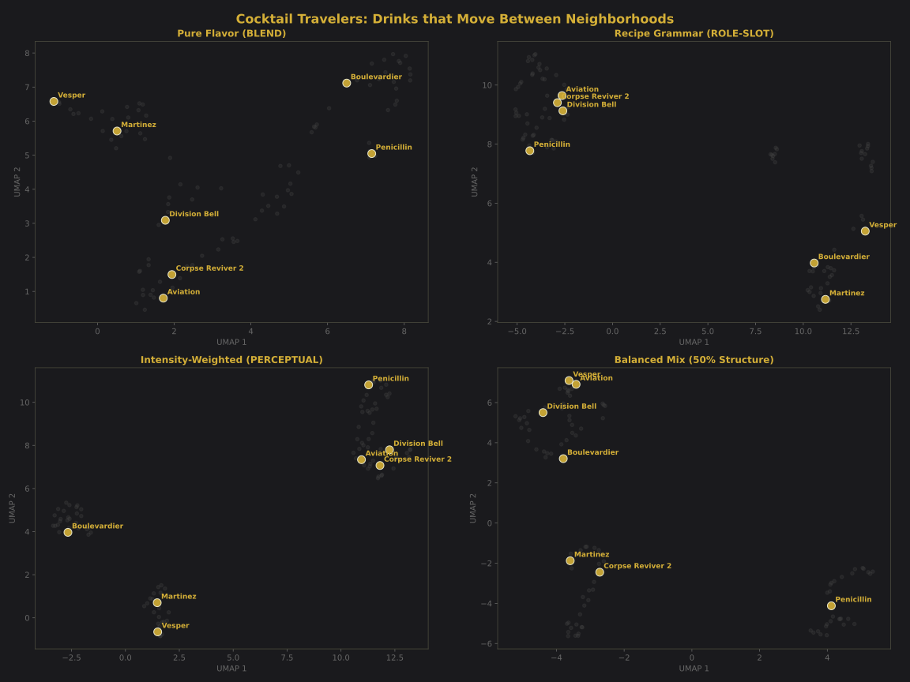

How Different Ways of Thinking About Similarity Produce Different Neighborhoods
Overview
This analysis explores how 102 classic cocktails cluster when we change our definition of "similar."
By examining four different vectorization strategies — pure flavor, recipe grammar, intensity-weighted perception,
and a balanced mix — we discover that some cocktails are stable anchors while others are nomadic travelers,
moving between completely different neighborhoods depending on how we look at them.
The Core Question
What makes two cocktails similar? Is it how they taste? How they're made?
Which ingredients dominate the experience? The answer changes everything.
A Boulevardier (bourbon, Campari, sweet vermouth) sits with Negronis when we consider structure —
they're the same template with different base spirits. But when we consider flavor, it drifts toward
Manhattan territory because bourbon and rye share more flavor DNA than bourbon and gin.
Pure Flavor Profile (BLEND)
The simplest approach: volume-weighted average of 15-dimensional flavor profiles. Each ingredient contributes
proportionally to its volume. This produces a silhouette score of 0.81 — the strongest clustering
of all strategies, because flavor families are remarkably consistent.
Figure 1: Pure flavor clustering shows clear separation between citrus sours (green), whiskey territory (bronze),
martini family (silver), and bitter aperitivo drinks (ruby).
The most coherent cluster across all strategies. These drinks share a fundamental citrus-sugar balance,
regardless of base spirit. The lime/lemon acidity dominates the flavor profile so strongly that a
Whiskey Sour clusters closer to a Daiquiri than to a Manhattan.
Whiskey-Vermouth Territory
Members: Manhattan, Perfect Manhattan, Rob Roy, Brooklyn, Vieux Carré, Remember the Maine,
Greenpoint, Little Italy, Black Manhattan, Dry Manhattan
Unified by the combination of whiskey's oak/grain/spice notes with sweet vermouth's herbal complexity.
Rob Roy (scotch) stays tightly coupled to Manhattan (rye) because the vermouth acts as a flavor bridge.
Martini Family
Members: Martini, Martini Olive, Fifty-Fifty Martini, Vesper, Gibson, Tuxedo, Dirty Martini
Gin's juniper-forward profile plus dry vermouth creates an unmistakable flavor signature. Even the Vesper,
with its vodka addition, can't escape this cluster's gravitational pull.
Notable Observations
Negroni and Manhattan don't cluster together despite both being "spirit + vermouth + modifier"
structurally. Campari's bitter intensity creates a completely different flavor profile than whiskey's sweetness.
All citrus sours collapse into one mega-cluster — the citrus overwhelms base spirit differences.
Trinidad Sour is completely isolated — using Angostura bitters as the base spirit creates
a flavor profile unlike anything else in the dataset.
Recipe Grammar (ROLE-SLOT)
This strategy treats cocktails as having four functional slots: base spirit, modifier/sweetener, citrus, and accent.
Each slot gets its own 15-dimensional flavor sub-vector, creating a 60-dimensional representation.
Silhouette score: 0.76 — slightly lower due to higher-dimensional sparsity.
Figure 2: Recipe grammar clustering emphasizes structural templates. Equal-parts drinks form a tight cluster
regardless of ingredients.
Identified Clusters
Equal-Parts Templates
Members: Negroni, Boulevardier, Old Pal, Mezcal Negroni, White Negroni, Last Word,
Paper Plane, Final Ward, Naked & Famous, Corpse Reviver #2
The defining characteristic isn't flavor but structure: equal volumes across all non-garnish ingredients.
This grammatical similarity overrides massive flavor differences — a gin-Chartreuse Last Word clusters
with a bourbon-Aperol Paper Plane.
Base + citrus + sweetener, shaken and served up. The template is so consistent that an egg-white
Clover Club clusters with a simple Daiquiri — the structural roles matter more than the ingredients.
The Americano Anomaly
Initially, we coded Americano with Campari as the base (since there's no distilled spirit).
This placed it far from Negroni (cosine distance: 3.2). Recoding Campari as accent to match
Negroni's role structure collapsed the distance to 0.87 — a single role swap produced a 3.7×
distance change. This extreme sensitivity reveals how critical role assignment is in this model.
Intensity-Weighted Flavor (PERCEPTUAL)
This strategy acknowledges that some ingredients "punch above their weight." A Penicillin has 60ml blended scotch
and just 7.5ml Islay scotch float, but that smoky Islay defines the entire drink. The model uses 40% max-pooling
and 60% volume-weighting. Silhouette score: 0.79.
Figure 3: Intensity-weighted clustering groups drinks by dominant flavors. Smoky drinks (brown),
Chartreuse drinks (green), and Fernet drinks (purple) form distinct territories.
United by smoke — whether from Islay scotch or mezcal. Penicillin's tiny Islay float (11% by volume)
has enough intensity to pull it away from other scotch sours and into mezcal territory.
Chartreuse Territory
Members: Last Word, Final Ward, Bijou, Yellow Jacket, Greenpoint, Champs-Élysées
Green Chartreuse's 130-herb intensity creates an unmistakable signature. Even when it's just one of
four equal parts (Last Word), it dominates the perceptual experience.
Absinthe-Touched
Members: Sazerac, Corpse Reviver #2, Death in the Afternoon, Improved Whiskey Cocktail,
Rattlesnake
Whether it's a rinse (Sazerac) or a full pour (Death in the Afternoon), absinthe's anise intensity
creates a distinct cluster. The model can't distinguish volume — it just knows absinthe is present.
Mathematical Example: Penicillin
Penicillin smoke calculation:
Blended Scotch: 60ml at smoke=0.1
Islay Scotch: 7.5ml at smoke=0.9
Result: 2.5× higher smoke value pushes Penicillin toward mezcal cluster
Balanced Mix (50% Structure, 50% Flavor)
The midpoint of the BLEND+STRUCT slider reveals cocktails in transition. With equal weighting of flavor and
structure, we see which drinks occupy boundary spaces. Silhouette score: 0.53 — the lowest,
as expected when averaging incommensurate signals.
Figure 4: At 50/50 mix, method-based clusters (shaken vs. stirred) begin forming while flavor
similarities still influence positioning.
What Emerges at the Midpoint
Boundary Dwellers
Members: Boulevardier, Martinez, Americano, Aperol Spritz, Division Bell
These cocktails don't fit cleanly into either pure flavor or pure structure categories. They're
the interesting edge cases that reveal the limitations of any single clustering approach.
At this midpoint, we can watch individual cocktails migrate:
Boulevardier sits exactly between Negroni (structural twin) and Manhattan (flavor cousin)
Martinez can't decide if it's a proto-Martini or a sweet Negroni variant
Americano hovers between bitter aperitivo and refreshing spritz territories
The Travelers: Cocktails That Move
Some cocktails dramatically change neighborhoods depending on the clustering strategy. These "travelers"
reveal the most about what each strategy prioritizes.

Figure 5: Seven cocktails that move significantly between strategies. Gold dots show their positions
across BLEND, ROLE-SLOT, PERCEPTUAL, and 50% mix views.
Cocktail
Movement (Δ)
Why It Travels
Vesper
3.5
Dry vermouth as modifier creates unique grammar in ROLE-SLOT, but flavor-wise it's just a strong Martini
Tuxedo
3.4
Maraschino + dry vermouth is grammatically unusual but tastes like a sweeter Martini
Boulevardier
3.2
Structurally a Negroni, flavor-wise a Manhattan — occupies the exact boundary
Division Bell
3.1
Mezcal + Aperol + maraschino creates classification chaos across all strategies
Aviation
2.8
Maraschino dominates in PERCEPTUAL, becomes a gin sour in BLEND
Corpse Reviver #2
2.7
Equal-parts structure, absinthe intensity, but ultimately gin-forward
Martinez
2.6
Old Tom gin base suggests Martini, but sweet vermouth + maraschino says Negroni
What The Travelers Teach Us
High-movement cocktails aren't poorly defined — they're multiply defined. They occupy the
interesting spaces between categories, which is often where innovation happens in cocktail development.
A Boulevardier isn't confused; it's bilingual, speaking both Negroni and Manhattan fluently.
Key Findings
1. Stable Cores vs. Fluid Boundaries
Some cocktails are definitional — they anchor their categories across all strategies:
Martini variations always cluster together (Δ < 0.5)
Manhattan family maintains coherence (Δ < 0.6)
Classic sours (Daiquiri, Margarita, Gimlet) are inseparable (Δ < 0.7)
These stable cores suggest there are fundamental cocktail archetypes that transcend any particular
analytical framework.
2. Base Spirit Matters, But Not How You'd Expect
We never explicitly told the model that "gin vs. whiskey" matters, yet base spirit naturally emerges
as a primary axis of variation. However:
In BLEND, a Whiskey Sour clusters with Daiquiris, not Manhattans
In PERCEPTUAL, anything with intense smoke (Islay or mezcal) groups together regardless of category
In ROLE-SLOT, base spirit becomes almost irrelevant — structure dominates
3. The Outliers Are Consistent
Trinidad Sour
45ml Angostura bitters as base spirit. Mean nearest-neighbor distance: 3.2 (z-score: 4.1).
Completely isolated in every strategy. Nothing else in the cocktail canon does this.
El Presidente
White rum + dry vermouth + curaçao + grenadine. The only drink with this specific grammar.
Mean NN distance: 2.8 (z-score: 3.4). Its structure is genuinely unique.
4. Intensity Creates Its Own Geography
The PERCEPTUAL strategy reveals that cocktail experience isn't just about proportions. Tiny amounts
of intense ingredients (Fernet, Chartreuse, absinthe, Islay scotch) can completely redefine a drink's
identity. This suggests that human perception of cocktails is non-linear — we notice and remember
intensity peaks more than average flavors.
Recommendations for Interface Design
Simplify to Four Views
Based on this analysis, we recommend reducing the interface from 21 slider positions to 4 distinct views:
1. Pure Flavor (BLEND)
What drinks actually taste like. Strongest clustering (0.81 silhouette). Best for flavor-based exploration.
2. Recipe Grammar (ROLE-SLOT)
How drinks are structurally composed. Reveals template patterns. Good for understanding cocktail construction.
3. Intensity-Weighted (PERCEPTUAL)
Emphasizes dominant flavors. Best matches human perception where intense flavors define the experience.
4. Balanced Mix (50%)
Shows boundary-dwelling cocktails. Useful for understanding drinks that defy single categorization.
Why These Four?
Maximum differentiation: Each view tells a fundamentally different story
Clear use cases: Users can understand when to use each view
Captures key insights: The gradual transitions in between don't reveal new clusters
Cognitive simplicity: Four options are manageable; 21 are overwhelming
Implementation Notes
The intermediate slider positions (5%, 10%, 15%, etc.) show smooth transitions but don't reveal
fundamentally new clustering patterns. The clusters either exist (at the endpoints) or dissolve
(at the midpoint). The journey is less interesting than the destinations.
Consider using radio buttons or tabs instead of a slider. This makes the distinct nature of each
view clearer and prevents users from getting lost in intermediate positions that have lower
cluster coherence.
Conclusion
This analysis reveals that "similarity" in cocktails is not a fixed property but a lens through which
we view relationships. A Boulevardier is simultaneously a Negroni (structurally) and a Manhattan
(flavor-wise). A Penicillin is both a scotch sour and a smoky-intense experience. These multiple
identities aren't contradictions — they're the richness that makes cocktail culture interesting.
The four recommended views — Pure Flavor, Recipe Grammar, Intensity-Weighted, and Balanced Mix —
capture the essential ways bartenders and drinkers think about cocktail relationships. By simplifying
to these core perspectives, we can provide clearer insights while avoiding the confusion of
intermediate states.
Ultimately, this cartography suggests that the most interesting cocktails are the ones that travel —
the boundary-dwellers that refuse single categorization. They're the ones that teach us the most about
what makes cocktails similar, and what makes them surprising.